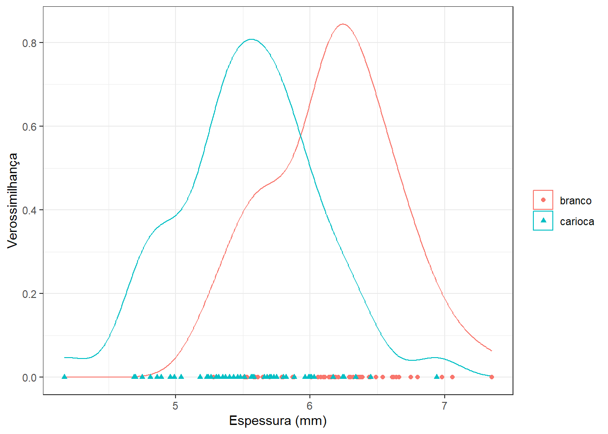
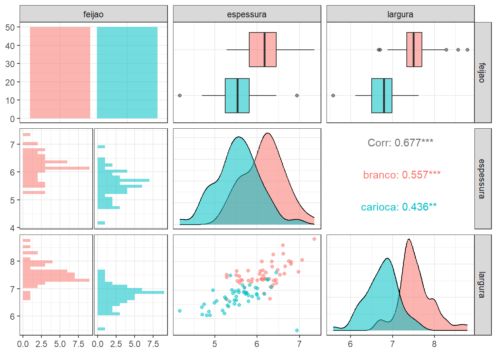
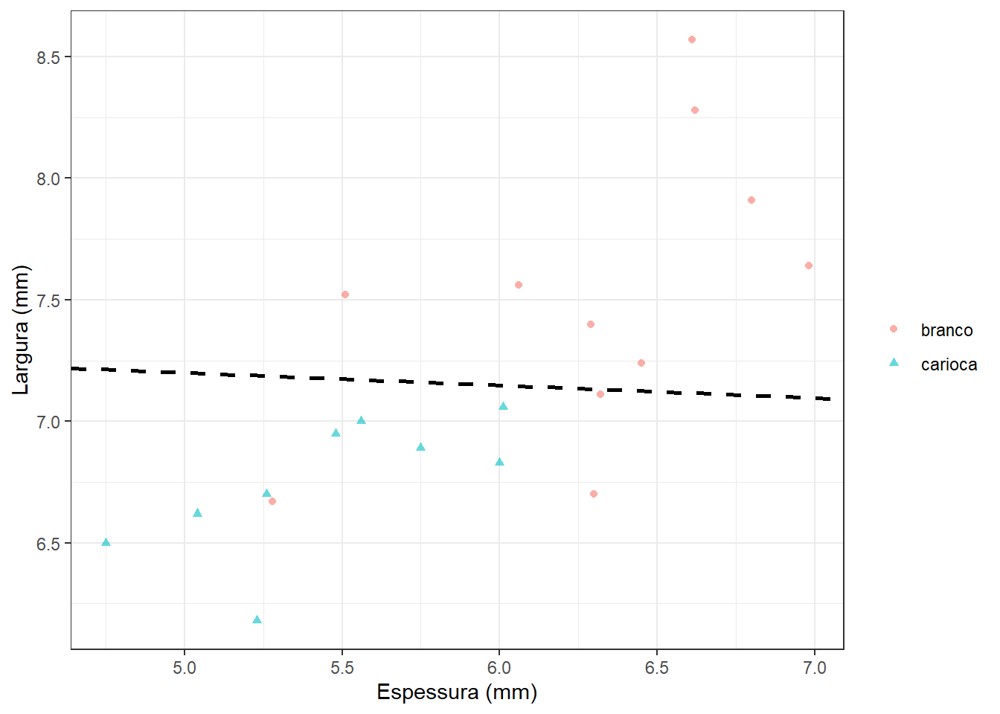
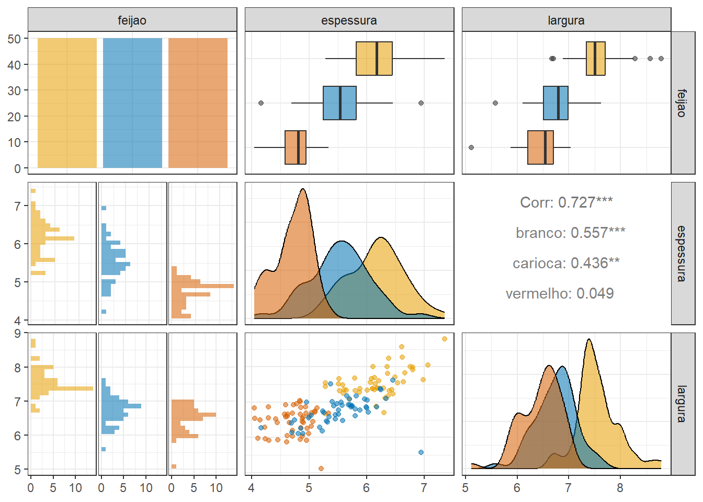
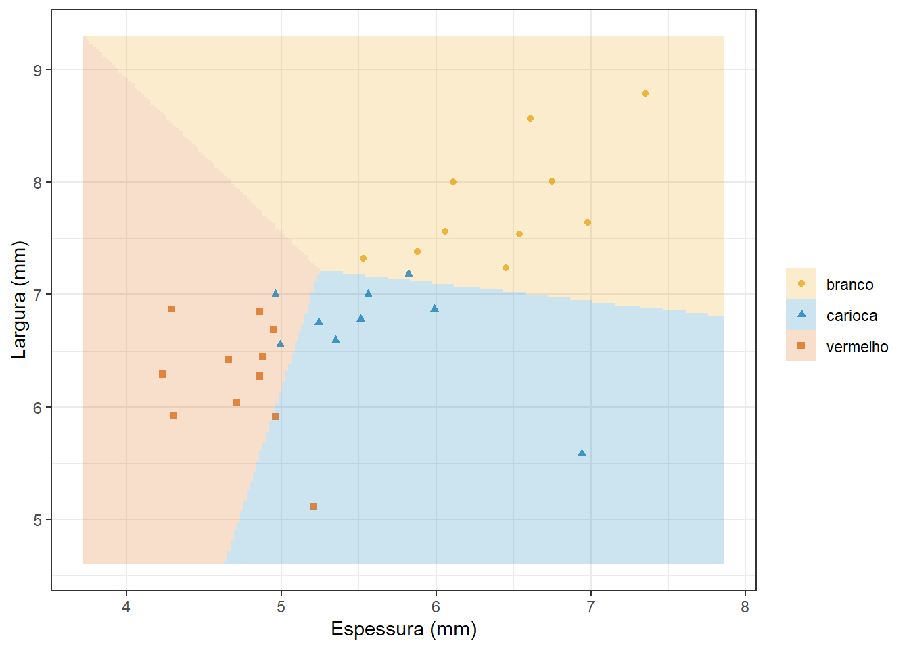
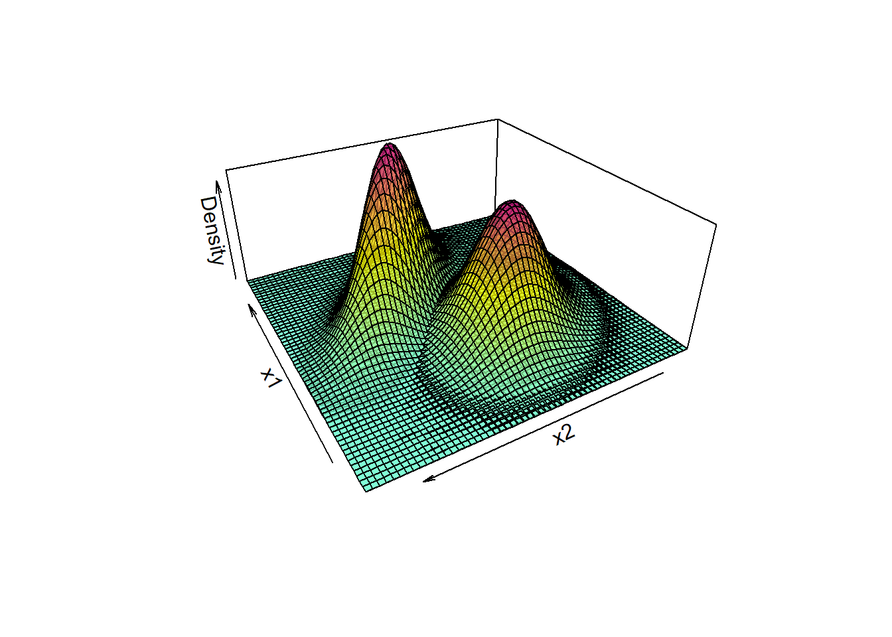
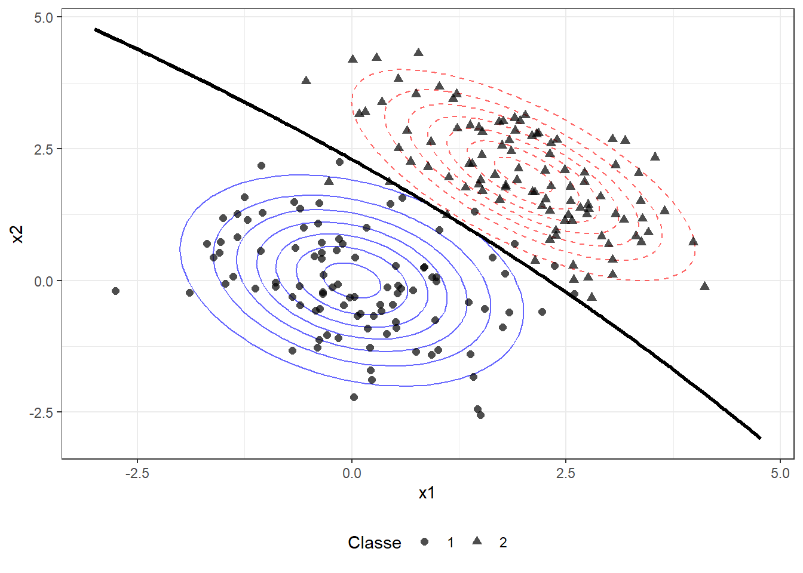
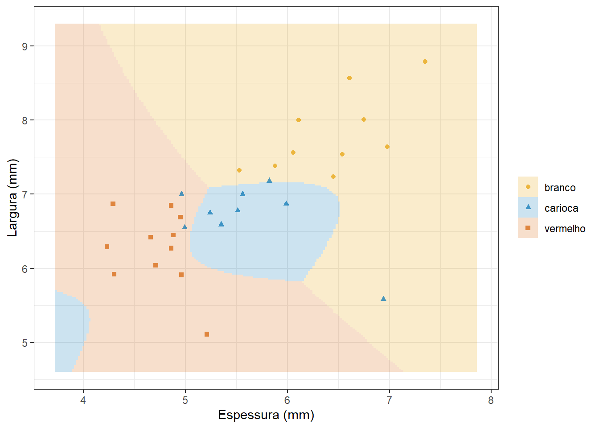
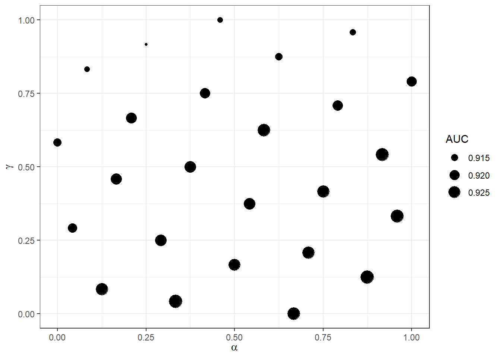
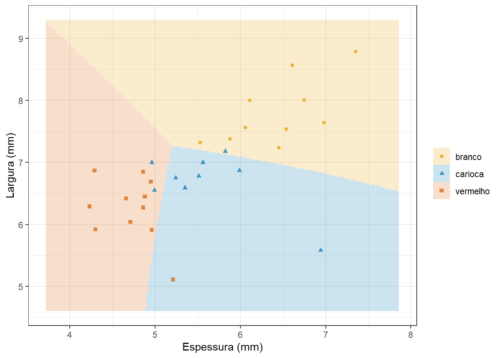

15 Classificação via análise discriminante
15.1 Análise discriminante linear binária simples
A análise discriminante linear é um método de estatística multivariada concebido por Fisher, comumente usado para classificação ou discriminação entre variáveis categóricas. Seja um problema de classificação binária de um supervisor de interesse, \(y=\{1,2\}\) em função de uma variável independente, \(x \in \mathbb{R}\). Pelo teorema de Bayes, pode-se trabalhar a probabilidade condicional de \(y\) pertencer a uma classe de interesse dado um valor de \(x\), por exemplo, \(p(y=1|x)\), conforme Equação 15.1,
\[ p(y=1|x) = \frac{p(x|y=1)p(y=1)}{p(x)}, \tag{15.1}\]
onde \(p(x|y=1)\) é a verossimilhança, a qual consiste na probabilidade de \(x\) dado que \(y=1\), podendo ser aproximada pela função densidade de probabilidade de \(x\) para \(y=1\). \(p(y=1)\) seria a probabilidade de \(y\) pertencer à classe 1, a qual pode ser estimada a partir da proporção dos dados de treino correspondentes. Por fim, \(p(x)\) seria a probabilidade da variável independente, que pode ser aproximada pela lei da probabilidade total e será constante e independente das classes, não influenciando nos resultados. Tomando a distribuição normal, a verossimilhança pode ser aproximada conforme Equação 15.2, onde \(\mu_1\) e \(\sigma_1\) são, respectivamente, a média e o desvio-padrão da distribuição de \(x\) dado que \(y=1\), os quais podem ser aproximados por dados amostrais.
\[ p(x|y=1)=f_1(x)=\frac{1}{\sqrt{2\pi}\sigma_1}e^{-\frac{1}{2}\bigl(\frac{x-\mu_1}{\sigma_1}\bigr)^2} \tag{15.2}\]
A análise discriminante linear pressupõe que as distribuições de \(x\) para as classes de interesse apresentam igual variabilidade, \(\sigma=\sigma_1=\sigma_2\). No caso de problemas de classificação, deseja-se ao final saber o valor de \(x\) que discrimina, ou seja, separa as classes de interesse. A Figura 15.1 exibe dados de duas classes distintas em função de uma única variável regressora e as densidades teóricas correspondentes de \(x\) para cada uma das classes.
Aplicando-se os conceitos explicados na formulação inicial, obtém-se a Equação 15.3.
\[ p(y=1|x) = \frac{p(y=1)\frac{1}{\sqrt{2\pi}\sigma}e^{-\frac{1}{2}\bigl(\frac{x-\mu_1}{\sigma}\bigr)^2}}{p(x)} \tag{15.3}\]
Assim como na regressão logística, pode-se usar o log da razão de chance para facilitar a discriminação, conforme Equação 15.4. O logaritmo facilita a separação dos produtos e da razão em soma e subtração, respectivamente.
\[ \begin{align} \text{ln } \biggl(\frac{p(y=1|x)}{p(y=2|x)}\biggr) & = \text{ln } \biggl(\frac{f_1(x)}{f_2(x)}\frac{p(y=1)}{p(y=2)}\biggr) \\ & =\text{ln } \frac{f_1(x)}{f_2(x)}+ \text{ln }\frac{p(y=1)}{p(y=2)} \\ \end{align} \tag{15.4}\]
Supondo o equilíbro entre as classes, \(\text{ln }\frac{p(y=1)}{p(y=2)} = 0\). Logo, obtém-se o resultado da Equação 15.5.
\[ \begin{align} \text{ln } \biggl(\frac{p(y=1|x)}{p(y=2|x)}\biggr) & = \text{ln } \frac{\frac{1}{\sqrt{2\pi}\sigma}e^\frac{-(x-\mu_1)^2}{\sigma}}{\frac{1}{\sqrt{2\pi}\sigma}e^\frac{-(x-\mu_2)^2}{\sigma}} \end{align} \tag{15.5}\]
Fazendo as devidas simplificações, obtém-se a Equação 15.6.
\[ \begin{align} \text{ln } \biggl(\frac{p(y=1|x)}{p(y=2|x)}\biggr) & = \frac{\mu_2^2-\mu_1^2}{2\sigma^2} + x\frac{\mu_1-\mu_2}{\sigma^2} \end{align} \tag{15.6}\]
Se o log da razão de chance for maior que 0, classifica-se \(y\) como pertencente à classe 1. Se, ao contrário, for menor que 0, \(y\) é classificado para a classe 2. As estimativas da média condicional e da variância comum são calculadas conforme Equação 15.7, onde \(c = {1,2}\) para o caso binário.
\[ \begin{align} \hat{\mu}_c & = \frac{1}{n_c}\sum_{i:y_i=c}x_i \\ \hat{\sigma}^2 &=\frac{1}{n-C}\sum_{c=1}^C\sum_{i:y_i=c}(x_i-\hat{\mu}_i)^2 \\ \end{align} \tag{15.7}\]
Considerando o log da razão de chance nulo e resolvendo para \(x\) a Equação 15.6, pode-se obter a fronteira de decisão, \(x^*\), pela Equação 15.8 que, no caso simples, consiste na média das médias da variável independente condicional às classes.
\[ x^*=\frac{\mu_1+\mu_2}{2} \tag{15.8}\]
Neste sentido, pode-se retomar o exemplo plotado anteriormente com a fronteira de decisão na Figura 15.2. Pode-se observar que a fronteira maximiza as probabilidades de verdadeiros positivos e negativos e minimiza as probabilidades de falsos positivo e negativo.

15.1.1 Analogia com a regressão logística
É possível deduzir os coeficientes do modelo de regressão logística binária simples a partir dos resultados expostos da análise discriminante linear . Tomando novamente o logaritmo da razão de chance da Equação 15.6 e comparando com a mesma relação obtida na regressão logística, exposta na Equação 13.4, os coeficientes de regressão logística podem ser definidos com base nos resultados da análise discriminante linear segundo a Equação 15.9, de forma que os resultados dos dois classificadores são análogos.
\[ \begin{align} \beta_0 &= \frac{\mu_2^2-\mu_1^2}{2\sigma^2} \\ \beta_1 &= \frac{\mu_1-\mu_2}{\sigma^2} \\ \end{align} \tag{15.9}\]
15.1.2 Função linear discriminante de Ficher
Fisher também determinou uma função linear discriminante, a qual visa maximizar a variância entre os grupos relativamente à variância comum dentro dos grupos. A função é expressa na Equação 15.10, consistindo no termo do log da razão de chance que contém \(x\). Classifica-se \(y\) para classe 1 se, \(u(x) \geq u(x^*)\) e para a classe 2, caso contrário.
\[ u(x) = \frac{\mu_1-\mu_2}{\sigma^2}x \tag{15.10}\]
15.1.3 Discriminação linear de feijões branco e carioca considerando a espessura
A Figura 15.3 apresenta as densidades amostrais da espessura de feijões branco e carioca. Observa-se que a variância da espessura das duas espécies é similar.

Toamando 80% dos dados para treino, obtém-se um modelo de análise discriminante linear com \(x^* = 5,84\) e coeficiente discriminante linear \((\mu_1-\mu_2)/\sigma=1,98\).
15.2 Análise discriminante linear para \(k\) variáveis independentes e duas classes
Seja o caso onde deseja-se realizar uma classificação binária em função de \(k\) variáveis independentes, \(x_1, x_2, ..., x_k\). Tais variáveis podem ser condensadas em um vetor \(k\)-dimensional, \(\mathbf{x} = [x_1, x_2, ..., x_k]^T\). O teorema de Bayes pode ser novamente usado, porém a verossimilhança será expressa pela função densidade de probabilidade multivariada que, no caso normal, considerando a classe \(y=1\), consiste na Equação 15.11.
\[ p(\mathbf{x}|y=1)=f_1(\mathbf{x})=\frac{1}{(2\pi)^{k/2}|\Sigma|^{1/2}}e^{-\frac{1}{2}(\mathbf{x}-\mu_1)^T\Sigma^{-1}(\mathbf{x}-\mu_1)} \tag{15.11}\]
Na função de densidade normal multivariada, \(\mu_1\) consiste no vetor de médias para as \(k\) variáveis independentes, condicional a \(y=1\), \(\mu_1 = [\bar{x}_{1,y=1},\bar{x}_{2,y=1},...,\bar{x}_{k,y=1}]^T\) e \(\Sigma\) consiste na matriz de covariância comum às duas classes, definida segundo Equação 15.12 para o caso onde \(k=2\) regressores, com \(\sigma_{12}\) consistindo na covariância entre \(x_1\) e \(x_2\).
\[ \Sigma = \biggl[ \begin{matrix} \sigma_1^2 & \sigma_{12} \\ \sigma_{21} & \sigma_2^2 \end{matrix} \biggr] \tag{15.12}\]
A Figura 15.4 plota densidades bivariadas de dados de um caso de classificação binária.

Sem a necessidade de repetir as deduções anteriores, pode-se escrever o log da razão de chance para o caso multivariado conforme Equação 15.13. Se o logit for maior que 0, então \(y=1\). De forma análoga, pode-se considerar a função discriminante como parte do logit que é função de \(\mathbf{x}\).
\[ \text{ln } \biggl(\frac{p(y=1|\mathbf{x})}{p(y=2|\mathbf{x})}\biggr) = (\mu_1-\mu_2)^T\Sigma^{-1}\mathbf{x} - \frac{1}{2}(\mu_1-\mu_2)^T\Sigma^{-1}(\mu_1+\mu_2) \tag{15.13}\]
Na Figura 15.5 o exemplo plotado na Figura 15.4 é novamente exibido em curvas de contorno com a fronteira obtida para discriminar as classes, além dos dados amostrais considerados.

A função discriminante linear para o caso de múltiplas variáveis independentes e duas classes é definida na Equação 15.14.
\[ u(x) = (\mu_1-\mu_2)^T\Sigma^{-1}\mathbf x \tag{15.14}\]
Em aplicações práticas as matrizes de covariância das classes não serão exatamente iguais. Logo, deve-se estimar uma matriz de covariância ponderada a partir dos dados de treino, conforme Equação 15.15.
\[ \hat{\Sigma} = \frac{\sum_{c=1}^{C}\sum_{i:g_i=k} (\mathbf{x}_i - \hat{\mu}_c) (\mathbf{x}_i - \hat{\mu}_c)^T}{N - C} \\ \tag{15.15}\]
15.2.1 Discriminação linear de feijões branco e carioca considerando a espessura e a largura
Seja o caso onde consideram-se dois preditores, a saber: espessura e largura, para classificar feijóes branco e carioca. A Figura 15.6 apresenta as distribuições amostrais, diagrama de dispersão e correlações entre tais medidas para as duas espécies. Observa-se boa proximidade entre as variabilidades individuais e conjuntas, justificando ainda o uso da análise linear discriminante. Tomando 80% de observações de treino, a função discriminante neste caso é \(-0,13x_1 -2,49x_2=0\), sendo plotada na Figura 15.7 com os dados de teste.


15.3 Análise linear discriminante para \(k\) variáveis independentes e três ou mais classes
No caso de três ou mais classes, é conveniente trabalhar uma função discriminante a partir do teorema de Bayes, sem uso da razão de chance. Tomando apenas o numerador, uma vez que o denominador é constante à todas as classes, tem-se a probabilidade condicional de pertencer a uma classe \(c\) conforme Equação 15.16, \(c=1,2,...,C\).
\[ p(y=c|\mathbf{x}) =p(\mathbf{x}|y=c)p(y=c) \tag{15.16}\]
Aplicando o logaritmo, pode-se eliminar o segundo termo da soma dos logs, uma vez que este será igual para todas as classes em casos de igualdade de observações de treino entre estas, \(n_1,n_2,...,n_c\). Após se aplicar a verossimilhança pode-se também eliminar o termo \(\frac{1}{(2\pi)^{k/2}|\Sigma|^{1/2}}\), uma vez que será constante para todas as classes.
\[ \begin{align} \text{ln }(p(y=c|\mathbf{x})) & =\text{ln } (p(\mathbf{x}|y=c)p(y=c)) \\ & = \text{ln } p(\mathbf{x}|y=c) + \not{\text{ln }p(y=c)} \\ & \simeq \text{ln } \frac{1}{(2\pi)^{k/2}|\Sigma|^{1/2}}e^{-\frac{1}{2}(\mathbf{x}-\mu_c)^T|\Sigma|^{-1}(\mathbf{x}-\mu_c)} \\ \end{align} \tag{15.17}\]
Logo, a função discriminante para a \(c\)-ésima classe pode ser deduzida conforme Equação 15.14, sendo o primeiro termo eliminado após a expansão dos produtos, visto que não depende da classe. Esta expansão é necessária para o caso onde \(C \geq3\) classes, devendo-se discriminar a observação \(\mathbf x_0\) de interesse para a classe que maximize \(u_c(\mathbf{x})\), \(c=1,...,C\), isto é, \(\displaystyle\hat{c} = \arg\max_{c} \; u_c(\mathbf{x})\).
\[ \begin{align} u_c(\mathbf{x}) & = -\frac{1}{2}(\mathbf{x}-\mu_c)^T|\Sigma|^{-1}(\mathbf{x}-\mu_c) \\ & = \not{-\frac{1}{2}\mathbf{x}^T\Sigma^{-1}\mathbf{x}} + \frac{1}{2}\mu_c^T\Sigma^{-1}\mathbf{x} + \frac{1}{2}\mathbf{x}^T\Sigma^{-1}\mu_c-\frac{1}{2}\mu_c^T\Sigma^{-1}\mu_c \\ u_c(\mathbf{x}) & = \mathbf{x}^T\Sigma^{-1}\mu_c-\frac{1}{2}\mu_c^T\Sigma^{-1}\mu_c \\ \end{align} \]
15.3.1 Discriminação linear de feijões branco, carioca e vermelho considerando a espessura e a largura
Seja o caso onde consideram-se três classes e dois preditores. A Figura 15.8 apresenta as distribuições amostrais, diagrama de dispersão e correlações entre tais medidas para as três espécies. Apesar da dispersão da espessura do feijão vermelho ser um pouco menor, será utilizada a análise discriminante linear para este caso, para fins de exemplificação.

O espaço de discriminação, no caso de \(c \geq 3\) nem sempre será composto por \(c-1\) fronteiras de decisão, uma vez que a discriminação é realizada considerando \(\displaystyle\hat{c} = \arg\max_{c} \; u_c(\mathbf{x})\). Logo, para cada vetor de valores de interesse dos preditores, deve-se calcular \(u_c(\mathbf x)\), \(c=1,...,C\). A Figura 15.9 expõe as regiões que discriminam as classes para o exemplo com os dados de teste.

15.4 Análise discriminante quadrática
A análise discriminante quadrática é útil para casos onde as variâncias da variável independente, no caso simples, ou as matrizes de covariâncias das variáveis independentes, no caso múltiplo, para as \(C\) classes são distintas. A Figura 15.10 plota densidades bivariadas de dados de um caso de classificação binária com distintas variâncias entre classes.

A fronteira de classificação em tais casos não será linear, conforme ilustrado na Figura 15.11.

A função discriminante quadrática para a \(c\)-ésima classe pode ser escrita conforme Equação 15.18. Pode-se observar que neste caso não se desconsideram termos dependentes da matriz de covariância, uma vez que esta é diferente para cada classe. Deve-se calcular o valor de \(u_c\), \(c=1,\dots,C\), de forma a decidir sobre a classe que maximiza tal função, \(\displaystyle\hat{c} = \arg\max_{c} \; u_c(\mathbf{x})\).
\[ u_c(\mathbf x) = -\frac 1 2 (\mathbf x - \mu_c)^T \Sigma_c^{-1}(\mathbf x - \mu_c)-\frac 1 2 \text{log }(\Sigma_c) \tag{15.18}\]
15.4.1 Discriminação quadrática de feijões branco, carioca e vermelho considerando a espessura e a largura
Seja novamente o caso para três classes e dois preditores, porém agora usando a discriminação quadrática.
A Figura 15.12 apresenta o resultado no espaço dos preditores para a classificação de feijões branco, carioca e vermelho em função da espessura e largura usando a análise discriminante quadrática. Observa-se capacidade não somente de obtenção de fronteiras não lineares, mas também de ilhas para discriminar classes com domínio limitado no espaço dos preditores.

15.5 Análise discriminante regularizada
A análise discriminante regularizada busca um equilíbrio entre a análise linear e a análise quadrática discriminantes. Conforme já estudado, enquanto na análise linear consideramos uma matriz de covariância comum, \(\hat \Sigma_c\), estimada de forma ponderada em relação aos dados de treino segundo a Equação 15.15, no caso quadrático, as matrizes de covariâncias individuais das classes são consideradas, segundo as distribuições amostrais dos preditores das classes, dando mais flexibilidade ao modelo. Uma primeira proposta de regularização considerada por Friedman é realizada a partir uma soma convexa na estimativa da matriz de covariância de cada classe, segundo a Equação 15.19, onde \(\alpha \in [0,1]\) consite no parâmetro de regularização que determina este equilíbrio entre tais abordagens.
\[ \hat{\Sigma}_c(\alpha) = \alpha\hat{\Sigma}_c + (1-\alpha)\hat{\Sigma}, \quad c = 1,\ldots,C \tag{15.19}\]
Uma outra outra possibilidade seria encolher a matriz de covariância para escalar, isto é, eliminar a covariância, conforme Equação 15.20, onde \(\gamma \in [0,1]\) consiste no parâmetro de encolhimento neste caso. Ao substituir tal resultado na Equação 15.19 testa-se uma família mais geral de matrizes de covariância, \(\hat \Sigma(\alpha,\gamma)\). Sugere-se estimar os níveis adequados de \(\alpha\) e \(\gamma\) para cada caso via validação cruzada e grid search.
\[ \hat{\Sigma}_c(\gamma) = \gamma\hat{\Sigma} + (1-\gamma)\hat{\sigma}^2\mathbf{I}, \quad c = 1,\ldots,C \tag{15.20}\]
15.5.1 Discriminação regularizada de feijões branco, carioca e vermelho considerando a espessura e a largura
A Figura 15.13 expõe os resultados da validação cruzada com grid search para selecionar \(\alpha\) e \(\gamma\) que maximizam o AUC para classificar feijões branco, carioca e vermelho, segundo a espessura e largura.

As regiões mais prováveis para cada classe obtidas via análise discriminante regularizada são plotadas na Figura 15.14.

15.6 Implementações em R
A seguir serão expostas as implementações necessárias para obter os resultados do capítulo.
15.6.1 Análise discriminante linear binária simples
Carregando pacotes e conjunto de dados. A biblioteca discrim contém um dos modelos disponíveis para análise discriminante linear. O conjunto de dados feijoes contém dados de comprimento, largura, espessura e massa de feijões das espécies fradinho, branco, vermelho, preto e carioca. Neste primeiro exemplo são consideradas apenas as espécies branco e carioca e o preditor espessura.
library(sjdatar)
library(ggplot2)
library(dplyr)
library(tidymodels)
library(discrim)
theme_set(theme_bw())
data(feijoes)
dados <- feijoes |>
filter(feijao %in% c("branco", "carioca")) |>
select(feijao,espessura) |>
mutate(feijao = factor(feijao))Visualizando a distribuição da espessura das espécies com gráfico de densidades amostrais.
ggplot(dados, aes(x=espessura,
pch=feijao, col=feijao)) +
geom_density() +
geom_point(aes(y=0)) +
labs(col="", pch="",
x = "Espessura (mm)",
y = "Verossimilhança")Separando dados de treino e teste.
set.seed(7)
split <- initial_split(dados, prop = 0.8)
dados_treino <- training(split)
dados_teste <- testing(split)Definição do modelo, receita, workflow e treinamento. Neste primeiro exemplo não é necessária a realização de validação cruzada com grid search, pois, por enquanto, não será realizada a regularização.
lda_model <- discrim_linear(
penalty = NULL,
regularization_method = NULL) |>
set_engine("MASS") |>
set_mode("classification")
receita <- recipe(formula = feijao ~ espessura,
data = dados_treino)
feijao_wf <-
workflow() |>
add_recipe(receita) |>
add_model(lda_model)
feijao_fit <- feijao_wf |>
fit(data = dados_treino)
feijao_fit |>
extract_fit_parsnip() Previsão para os dados de teste e matriz de confusão.
pred_completo <- bind_cols(
predict(feijao_fit, dados_teste), # previsao discreta
predict(feijao_fit, dados_teste, type = "prob"),
dados_teste
)
cm1 <- conf_mat(pred_completo, truth = feijao, estimate = .pred_class)
cm1Métricas de classificação.
metricas <- metric_set(accuracy, sensitivity, specificity, roc_auc)
metricas(pred_completo,
truth = feijao,
estimate = .pred_class,
.pred_branco)Curva ROC.
roc_data <- roc_curve(pred_completo, truth = feijao, .pred_branco)
autoplot(roc_data)15.6.2 Análise discriminante linear binária múltipla
Seja novamente o conjunto de dados feijoes, considerando novamente a classificação das espécies branco e carioca, porém agora em função da espessura e da largura.
library(GGally)
data(feijoes)
dados <- feijoes |>
filter(feijao %in% c("branco", "carioca")) |>
select(feijao,espessura,largura) |>
mutate(feijao = factor(feijao))
ggpairs(dados, aes(col=feijao, alpha = .5), progress = F)Separando dados de treino e teste. Definindo receita, workflow e realizando o treinamento do modelo.
set.seed(7)
split <- initial_split(dados, prop = 0.8)
dados_treino <- training(split)
dados_teste <- testing(split)
receita <- recipe(formula = feijao ~ .,
data = dados_treino) |>
step_normalize()
feijao_wf <-
workflow() |>
add_recipe(receita) |>
add_model(lda_model)
feijao_fit <- feijao_wf |>
fit(data = dados_treino)
fp <- feijao_fit |>
extract_fit_parsnip()
fpVisualizando a fronteira de discriminação entre as classes no espaço dos preditores. Deve-se extrair os coeficientes do modelo e plotar a função discriminante, segundo a Equação 15.14. Sugere-se plotar junto aos dados de teste.
w1 <- fp$fit$scaling[1]
w2 <- fp$fit$scaling[2]
fit_engine <- feijao_fit |>
extract_fit_engine()
# Ponto de corte c = w^T * (mu1+mu2)/2
mu_bar <- colMeans(fit_engine$means)
c_cut <- w1 * mu_bar["espessura"] + w2 * mu_bar["largura"]
ggplot(dados_teste, aes(x = espessura,
y = largura,
color = feijao,
pch = feijao)) +
geom_point(alpha = 0.6) +
geom_abline(
slope = -w1 / w2,
intercept = c_cut / w2,
linetype = "dashed", linewidth = 1
) +
labs(color = "",pch="",
x="Espessura (mm)",
y="Largura (mm)")Previsão para os dados de teste e matriz de confusão.
pred_completo <- bind_cols(
predict(feijao_fit, dados_teste), # previsao discreta
predict(feijao_fit, dados_teste, type = "prob"),
dados_teste
)
cm1 <- conf_mat(pred_completo, truth = feijao, estimate = .pred_class)
cm1Métricas de classificação.
metricas <- metric_set(accuracy, sensitivity, specificity, roc_auc)
metricas(pred_completo,
truth = feijao,
estimate = .pred_class,
.pred_branco)Curva ROC.
roc_data <- roc_curve(pred_completo, truth = feijao, .pred_branco)
autoplot(roc_data)15.6.3 Análise linear discriminante para \(k\) variáveis independentes e três ou mais classes
Seja a discriminação linear de feijões branco, carioca e vermelho considerando a espessura e a largura.
data(feijoes)
dados <- feijoes |>
filter(feijao %in% c("branco", "carioca", "vermelho")) |>
select(feijao,espessura,largura) |>
mutate(feijao = factor(feijao))
ggpairs(dados, aes(col=feijao, alpha = .5), progress = F)Separando dados de treino e teste. Definindo receita, workflow e realizando o treinamento do modelo.
set.seed(7)
split <- initial_split(dados, prop = 0.8)
dados_treino <- training(split)
dados_teste <- testing(split)
receita <- recipe(formula = feijao ~ .,
data = dados_treino) |>
step_normalize()
feijao_wf <-
workflow() |>
add_recipe(receita) |>
add_model(lda_model)
feijao_fit <- feijao_wf |>
fit(data = dados_treino)
feijao_fit |>
extract_fit_parsnip()Plotando fronteiras no espaço dos preditores. Para três ou mais classes deve-se avaliar qual a mais provável para cada ponto no espaço dos preditores.
fit_engine <- feijao_fit |> extract_fit_engine()
# Grid cobrindo o espaço dos preditores
grid <- expand.grid(
espessura = seq(min(dados_teste$espessura) - 0.5,
max(dados_teste$espessura) + 0.5, length.out = 200),
largura = seq(min(dados_teste$largura) - 0.5,
max(dados_teste$largura) + 0.5, length.out = 200)
)
# Predições no grid
grid$feijao <- predict(fit_engine, newdata = grid)$class
ggplot() +
geom_tile(data = grid,
aes(x = espessura, y = largura, fill = feijao),
alpha = 0.2) +
geom_point(data = dados_teste,
aes(x = espessura, y = largura,
color = feijao, pch = feijao),
alpha = 0.7) +
labs(fill = "", color = "", pch = "",
x = "Espessura (mm)", y = "Largura (mm)")Previsão para os dados de teste e matriz de confusão.
pred_completo <- bind_cols(
predict(feijao_fit, dados_teste), # previsao discreta
predict(feijao_fit, dados_teste, type = "prob"),
dados_teste
)
cm1 <- conf_mat(pred_completo, truth = feijao, estimate = .pred_class)
cm1Métricas de classificação.
metricas <- metric_set(accuracy, sensitivity, specificity, roc_auc)
metricas(pred_completo,
truth = feijao,
estimate = .pred_class,
.pred_branco, .pred_carioca, .pred_vermelho)Curvas ROC.
roc_data <- roc_curve(pred_completo, truth = feijao,
.pred_branco, .pred_carioca, .pred_vermelho)
autoplot(roc_data)15.6.4 Análise discriminante quadrática
Seja a discriminação quadrática de feijões branco, carioca e vermelho considerando a espessura e a largura. O modelo neste caso é definido com a função qda_model usando a biblioteca MASS. os dados são os mesmos da implementação anterior. Logo, segue a definição do modelo, receita, workflow, bem como o treinamento do modelo.
qda_model <- discrim_quad(
regularization_method = NULL) |>
set_engine("MASS") |>
set_mode("classification")
feijao_wf_qda <- workflow() |>
add_recipe(receita) |>
add_model(qda_model)
feijao_fit_qda <- feijao_wf_qda |>
fit(data = dados_treino)
feijao_fit_qda |>
extract_fit_parsnip() fit_engine_qda <- feijao_fit_qda |> extract_fit_engine()
grid$feijao_qda <- predict(fit_engine_qda, newdata = grid)$class
ggplot() +
geom_tile(data = grid,
aes(x = espessura, y = largura, fill = feijao_qda),
alpha = 0.2) +
geom_point(data = dados_teste,
aes(x = espessura, y = largura,
color = feijao, pch = feijao),
alpha = 0.7) +
labs(fill = "", color = "", pch = "",
x = "Espessura (mm)", y = "Largura (mm)") +
theme_bw()Previsão para os dados de teste e matriz de confusão.
pred_completo <- bind_cols(
predict(feijao_fit_qda, dados_teste), # previsao discreta
predict(feijao_fit_qda, dados_teste, type = "prob"),
dados_teste
)
cm1 <- conf_mat(pred_completo, truth = feijao, estimate = .pred_class)
cm1Métricas de classificação.
metricas <- metric_set(accuracy, sensitivity, specificity, roc_auc)
metricas(pred_completo,
truth = feijao,
estimate = .pred_class,
.pred_branco, .pred_carioca, .pred_vermelho)Curvas ROC.
roc_data <- roc_curve(pred_completo, truth = feijao,
.pred_branco, .pred_carioca, .pred_vermelho)
autoplot(roc_data)15.6.5 Análise discriminante regularizada
Seja, por fim, a discriminação regularizada de feijões branco, carioca e vermelho considerando a espessura e a largura. Apesar dos modelos discrim_linear e discrim_quad também apresentarem a possibilidade de regularização, sugere-se o modelo discrim_regularized da biblioteca klaR com mesmo modelo exposto na Seção 15.5. Tal modelo permite a discriminação com hiperparâmetros \(\alpha\), o qual define um modelo entre o puramente linear e o puramente quadrático, e \(\gamma\), o qual define a prporção de encolhimento da matriz de covariância \(\Sigma\). Para realizar a otimização dos hiperparâmetros, sugere-se validação cruzada com \(v\)-dobras e grid search. Segue abaixo a definição do modelo, grid aleatório, particionamento dos dados e workflow.
rda_model <- discrim_regularized(
frac_common_cov = tune(), # alpha
frac_identity = tune() # gamma
) |>
set_engine("klaR")
rda_grid <- grid_space_filling(frac_common_cov(),
frac_identity(),
size = 25)
set.seed(234)
cell_folds <- vfold_cv(dados_treino,
v = 5)
rda_wf <- workflow() |>
add_recipe(receita) |>
add_model(rda_model)Validação cruzada com grid search.
rda_res <-
rda_wf|>
tune_grid(
resamples = cell_folds,
grid = rda_grid
)Visualizando os resultados da validação cruzada e grid search para a área abaixo da curva ROC em função dos hiperparâmetros.
rda_res |>
collect_metrics() |>
filter(.metric == "roc_auc") |>
ggplot(aes(frac_common_cov,
frac_identity,
size = mean)) +
geom_point() +
scale_colour_distiller(palette = "Spectral") +
labs(
x = expression(alpha),
y = expression(gamma),
size = "AUC"
) + theme_bw()Extraindo e finalizando melhor modelo.
best_rda <- select_best(rda_res,
metric = "roc_auc")
best_rda
rda_final <- rda_wf |>
finalize_workflow(best_rda) |>
fit(data = dados_treino)
rda_finalFronteira de clasificação com dados de teste.
grid$feijao_rda <- predict(rda_final, new_data = grid)$.pred_class
ggplot() +
geom_tile(data = grid,
aes(x = espessura, y = largura, fill = feijao_rda),
alpha = 0.2) +
geom_point(data = dados_teste,
aes(x = espessura, y = largura,
color = feijao, pch = feijao),
alpha = 0.7) +
labs(fill = "", color = "", pch = "",
x = "Espessura (mm)", y = "Largura (mm)") +
theme_bw()Previsão para os dados de teste e matriz de confusão.
pred_completo <- bind_cols(
predict(rda_final, dados_teste), # previsao discreta
predict(rda_final, dados_teste, type = "prob"),
dados_teste
)
cm1 <- conf_mat(pred_completo, truth = feijao, estimate = .pred_class)
cm1Métricas de classificação.
metricas <- metric_set(accuracy, sensitivity, specificity, roc_auc)
metricas(pred_completo,
truth = feijao,
estimate = .pred_class,
.pred_branco, .pred_carioca, .pred_vermelho)Curvas ROC.
roc_data <- roc_curve(pred_completo, truth = feijao,
.pred_branco, .pred_carioca, .pred_vermelho)
autoplot(roc_data)15.7 Referências
Friedman, J. H. (1989). Regularized discriminant analysis. Journal of the American statistical association, 84(405), 165-175.
Gareth, J., Daniela, W., Trevor, H., & Robert, T. (2013). An introduction to statistical learning: with applications in R. Spinger.
Hastie, T., Tibshirani, R., Friedman, J. H., & Friedman, J. H. (2009). The elements of statistical learning: data mining, inference, and prediction (Vol. 2, pp. 1-758). New York: springer.
Kuhn, M., & Silge, J. (2022). Tidy modeling with R: A framework for modeling in the tidyverse. ” O’Reilly Media, Inc.”.
Ramey, J. A., Stein, C. K., Young, P. D., & Young, D. M. (2016). High-dimensional regularized discriminant analysis. arXiv preprint arXiv:1602.01182.
15.8 Exercícios
O conjunto de dados
feijoesapresenta outras espécies e preditores. obtenha um modelo de análise discriminante regularizada para classificar as espécies. Considere todos os preditores e faça a normalização destes na receita. Obtenha a matriz de confusão, curva ROC e métricas de classificação para os dados de teste.Tomando o conjunto de dados
folhasfrutas, obtenha um modelo de análise linear discriminante para classificar as espécies. Considere todos os preditores e faça a normalização destes na receita. Obtenha a matriz de confusão, curva ROC e métricas de classificação para os dados de teste.Tomando o conjunto de dados
folhasfrutas, obtenha um modelo de análise quadrática discriminante para classificar as espécies. Considere todos os preditores e faça a normalização destes na receita. Obtenha a matriz de confusão, curva ROC e métricas de classificação para os dados de teste.Tomando o conjunto de dados
folhasfrutas, obtenha um modelo de análise discriminante regularizada para classificar as espécies. Considere todos os preditores e faça a normalização destes na receita. Realize validação cruzada comgrid searchpara otimizar os hiperparâmetros. Obtenha a matriz de confusão, curva ROC e métricas de classificação para os dados de teste.